EE564 - Design of Electrical Machines
Contents
- Project-2: Asynchronous Traction Motor Design
- Name: Mesut Uğur
- ID: 1626753
- INTRODUCTION
- Project Specifications
- Main Design Inputs
- Main dimensions:
- Selection of main dimensions
- Validation of machine loading and tangential stress
- Selection of stator slot number and turn numbers
- Selection of flux densities (text book, page: 283) based on the table given below:
- Calculation of winding factors for the particular design
- Selection of stator turn numbers
- MMF Calculation
- Correction of Air Gap Distance
- Rotor bar number selection
- Selection of stator conductors
- Selection of rotor conductors
- Stator Slot Sizing
- Stator MMFS
- Rotor Bar Sizing
- Equivalent core length with cooling
- Effective air gap length
- Rotor MMFS
- Magnetizing Inductance and Current
- Leakage Inductances
- Stator copper winding and rotor bar resistance
- The per unit values
- Mass Calculations
- Copper Losses
- Core losses
- Friction and Windage Losses
- Total loss and Efficiency
- Core loss resistance
- Equivalent Circuit
- Torque-Speed Characteristics
- CONCLUSION
- NOT USED PARAMETERS
Project-2: Asynchronous Traction Motor Design
Name: Mesut Uğur
ID: 1626753
INTRODUCTION
In this project, we are asked to design a squirrel cage asynchronous motor for a high power railway traction vehicle.
This report is composed of the following sections:
- Project specifications and selected main design inputs
- Calculation of main dimensions
- Selection of main dimensions and validation of machine loading
- Selection of stator slot number and turn numbers
- Validating the results and iterations
- Calculation of MMF, flux density, winding factors and the resultant induced voltage
- Selection of rotor slot number
- Selection of stator and rotor conductors
- Calculation of stator slot and rotor bar dimensions
- Calculation of equivalent core length and effective air gap distance
- Calculation of winding and bar resistances, leakage inductances and magnetizing inductance
- Calculation of copper and aluminium losses
- Calculation of copper and aluminium masses
- Calculation of iron mass
- Calculation of core losses and the core loss resistance of equivalent circuit
- Calculation of stator to rotor turns ratio
- Calculation of efficiency
- Torque-speed characteristics
- Determination of basic parameters like starting torque, maximum torque etc.
- Basic thermal analysis
- Conclusions
- References
Project Specifications
Traction asynchronous squirrel cage induction motor
Rated Power Output: 1280 kW
Line-to-line voltage: 1350 V
Number of poles: 6
Rated Speed: 1520 rpm (72 km/h) (driven with 78 Hz inverter)
Rated Motor Torque: 7843 Nm
Cooling: Forced Air Cooling
Insulating Class: 200
Train Wheel Diameter: 1210 mm
Maximum Speed: 140 km/h
Gear Ratio: 4.821
Main Design Inputs
Duty: Continuous running duty (S1)
Efficiency: IE3, premium efficiency: 96 %
Efficiency: IE4, super premium efficiency: 97 %
The efficiency requirement is obtained by using the IE efficiency classes as shown in Figure below:
An efficiency of 0.95 is aimed
Power factor: 0.87
Average winding temp rise: 130 degree C
Hot spot temp rise: 160 degree C
Maximum winding temp: 200 degree C
Ingress protection: IP54. Limited protection against dust ingress. Protected against splash water from any direction.
I = imread('IE efficiency class.png'); figure; imshow(I); title('IE efficiency class','FontSize',18,'FontWeight','Bold');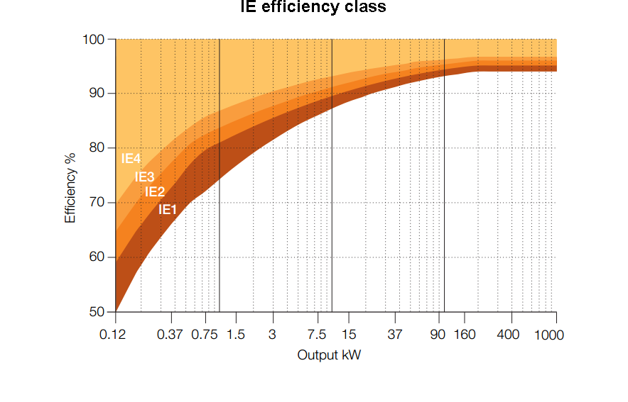
Design Inputs
Prated = 1280e3; % watts pole = 6; pole_pair = pole/2; phase = 3; Vrated = 1350; % volts line-to-line Nrated = 1520; % rpm frated = 78; % Hz vrated = 72; % km/h vmax = 140; % km/h Trated = 7843; % Nm wheel_dia = 1.21; % m gear_ratio = 4.821; power_factor = 0.86; % assumed (not a given data) efficiency = 0.965; % assumed (not a given data)
Main dimensions:
Machine length, inner and outer diameter, air gap distance
Electrical and magnetic loading
Vphase = Vrated/sqrt(3); % volts Nsync = 120*frated/pole; % rpm wrated = Nrated*2*pi/60; % rad/sec torque = Prated/wrated; % N power_pole_pair = Prated/pole_pair; % watts Pin = Prated/efficiency; % watts Irated = Pin/(sqrt(3)*Vrated*power_factor); % amps
Cmech is between 310 and 250 from graph given below. Initially, Cmech = 300 is chosen
I = imread('Cmec.png'); figure; imshow(I); title('specific Machine Constant vs Power/pole pair','FontSize',18,'FontWeight','Bold'); Cmech = 300; % kWs/m^3 fsync = 2*frated/pole; % Hz fprintf('Synchronous speed is %g Hz(mechanical)\n',fsync);
Synchronous speed is 26 Hz(mechanical)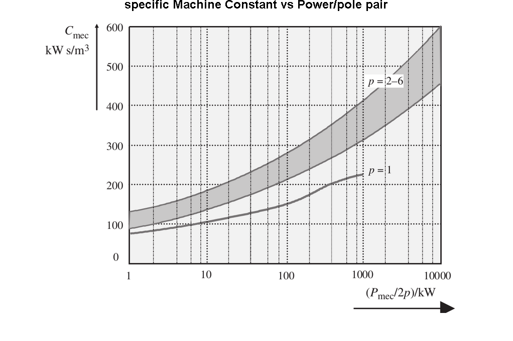
diameter^2*length can be calculated by using the Cmec information:
d2l = Prated*1e-3/(Cmech*fsync); % m^3
The aspect ratio is calculated by using the pole number:
aspect_ratio = (pi/pole)*(pole_pair)^(1/3);
fprintf('Aspect ratio is %g\n',aspect_ratio);
Aspect ratio is 0.75516
From these two information, the inner diameter and length can be calculated:
inner_diameter = (d2l/aspect_ratio)^(1/3); % m length = inner_diameter*aspect_ratio; % m inner_radius = inner_diameter/2; % m fprintf('Inner diameter of the machine is %g m\n',inner_diameter); fprintf('Length of the machine is %g m\n',length);
Inner diameter of the machine is 0.601209 m Length of the machine is 0.454009 m
The tangential force is calculated by using the rated torque:
Ftan = torque/inner_radius; % N surface_area = pi*inner_diameter*length; % m^2
From the tangential force and surface area info, tangantial stress can be calculated:
tan_stress = 1e-3*Ftan/surface_area; % kPa fprintf('Tangential force is %g Newtons\n',Ftan); fprintf('Inner surface area is %g m^2\n',surface_area); fprintf('Tangential stress is %g kPascals\n',tan_stress);
Tangential force is 26751.1 Newtons Inner surface area is 0.857511 m^2 Tangential stress is 31.1963 kPascals
In the table below, suggested shear stress values for different kinds of machines are given. A value between 20 kPa and 40 kPa, (around 30 kPa) is acceptable. The resultant shear stress (31.5 kPa) satisfies this constraint.
I = imread('shear stress.png'); figure; imshow(I); title('Shear Stress For Different Machines','FontSize',18,'FontWeight','Bold');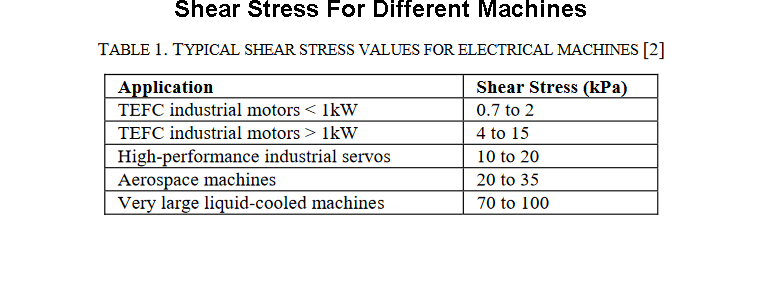
For a given pole number, the empirical formula is used for outer diameter calculation:
outer_diameter = 1.87*inner_diameter; % for 6 pole fprintf('Outer diameter is %g m\n',outer_diameter);
Outer diameter is 1.12426 m
The air gap diatance calculation is alse based on the empirical formula given below. A scale of 1.6 is added for heavy duty operation. %60 increase for heavy duty
air_gap_distance = 1.6*(0.18+0.006*Prated^0.4); % mm circumference = pi*inner_diameter; % m fprintf('Air gap distance is %g mm\n',air_gap_distance); fprintf('Circumference of the inner is %g m\n',circumference);
Air gap distance is 2.94968 mm Circumference of the inner is 1.88875 m
The magnetic loading of the machine is selected from the table below (Table 6.2 of the text book)
magnetic_loading = 0.9; % T
The electric loading is obtained from this magnetic loading and tangential stress information for validation.
electric_loading = tan_stress/magnetic_loading; % kA/m fprintf('Selected magnetic loading is %g Tesla\n',magnetic_loading); fprintf('Resultant electric loading is %g kA/m\n',electric_loading); I = imread('magnetic loading.png'); figure; imshow(I); title('Typical Magnetic Loading Values','FontSize',18,'FontWeight','Bold');
Selected magnetic loading is 0.9 Tesla Resultant electric loading is 34.6625 kA/m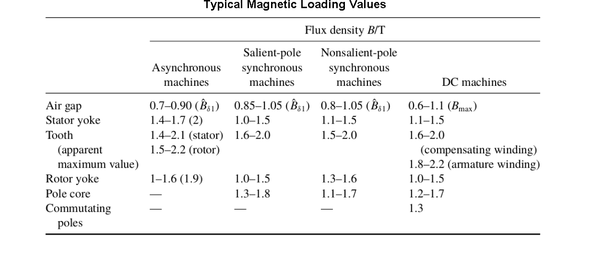
The results are validated by using the electric loading table given below. 34.6 kA/m electric loading is within acceptable limits. (Table 6.3 of the text book)
I = imread('tan stress.png'); figure; imshow(I); title('Typical Electric Loading Values','FontSize',18,'FontWeight','Bold');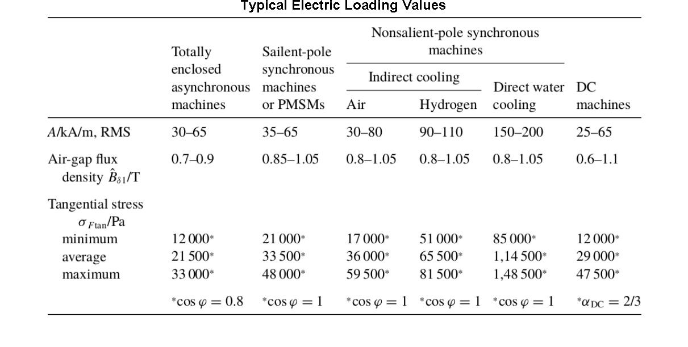
Selection of main dimensions
Choose:
inner_diameter = 0.6; % m outer_diameter = 1.12; % m length = 0.45; % m air_gap_distance = 3; % mm surface_area = pi*inner_diameter*length; % m^2 inner_volume = inner_diameter^2*length*pi/4; % m^3 circumference = pi*inner_diameter; % m fprintf('The chosen machine dimensions are:\n\nInner diameter = %g m\n',inner_diameter); fprintf('Outer diameter = %g m\n',outer_diameter); fprintf('Length = %g m\n',length); fprintf('Air gap distance = %g mm\n',air_gap_distance); fprintf('Inner surface area = %g m^2\n',surface_area); fprintf('Inner volume = %g m^3\n',inner_volume); fprintf('Inner circumference = %g m\n',circumference);
The chosen machine dimensions are: Inner diameter = 0.6 m Outer diameter = 1.12 m Length = 0.45 m Air gap distance = 3 mm Inner surface area = 0.84823 m^2 Inner volume = 0.127235 m^3 Inner circumference = 1.88496 m
Validation of machine loading and tangential stress
Ftan = torque/inner_radius; % N tan_stress = Ftan/surface_area; % P Cmech = Prated*1e-3/(inner_diameter^2*length*fsync); % kWs/m^3 magnetic_loading = 0.9; % Tesla electric_loading = tan_stress/magnetic_loading*1e-3; % kA/m fprintf('The resultant tangential stress = %g kPa\n',1e-3*tan_stress); fprintf('The resultant specific machine constant = %g kWs/m^3\n',Cmech); fprintf('The resultant magnetic loading = %g Tesla\n',magnetic_loading); fprintf('The resultant electrical loading = %g kA/m\n',electric_loading);
The resultant tangential stress = 31.5376 kPa The resultant specific machine constant = 303.894 kWs/m^3 The resultant magnetic loading = 0.9 Tesla The resultant electrical loading = 35.0418 kA/m
Selection of stator slot number and turn numbers
Slot number selection: typical slot pitch for asynchronous motors is in the range of 7-45 mm. From this info, as the circumference is now known, the minimum and maximum number of slots can be calculated:
maximum_slot = floor(circumference/0.007); minimum_slot = ceil(circumference/0.045); fprintf('Minimum number of stator slots is %g\n',minimum_slot); fprintf('Maximum number of stator slots is %g\n',maximum_slot);
Minimum number of stator slots is 42 Maximum number of stator slots is 269
We know that, the stator number of slots (Qs) should be an integer multiple of both phase number and pole number. Therefore, the possible stator number of slots can be calculated as following. The corresponding slot/pole/phase is also shown (qs).
integer_multiple = phase*pole; for k = 1:10 Qs = integer_multiple*k; qs = Qs/(pole*phase); if Qs<maximum_slot && Qs>minimum_slot fprintf('%d number of stator slots is available, qs = %d\n',Qs,qs); end end
54 number of stator slots is available, qs = 3 72 number of stator slots is available, qs = 4 90 number of stator slots is available, qs = 5 108 number of stator slots is available, qs = 6 126 number of stator slots is available, qs = 7 144 number of stator slots is available, qs = 8 162 number of stator slots is available, qs = 9 180 number of stator slots is available, qs = 10
Among the alternatives, the selection is based on pitch factor. It is aimed to eliminate the 5th harmonic by using an under-pitched stator so that qs should be 5. This is actually the 1st iteration of this design. Further iterations could be needed.
qs = 5; Qs = qs*pole*phase; stator_slot_pitch = circumference/Qs; % m fprintf('Selected slot/pole/phase (qs) is %g\n',qs); fprintf('Selected stator slot number (Qs) is %g\n',Qs); fprintf('The resultant stator slot pitch (Tus) is %g mm. ',stator_slot_pitch*1e3); fprintf('It is within acceptable limits.\n');
Selected slot/pole/phase (qs) is 5 Selected stator slot number (Qs) is 90 The resultant stator slot pitch (Tus) is 20.944 mm. It is within acceptable limits.
Since the harmonic elimitation will be used and the stator will be under-pitched, a double layer winding is needed.
stator_layer = 2;
For the elimination of 5th harmonic, a pitch factor of 4/5 or pitch angle of 4pi/5 will be used. The angle of one slot is also calculated.
pitch_angle = 4*pi/5; % radians electrical slot_angle = pi/qs/phase; % radians electrical fprintf('Pitch angle of stator is %g degrees electrical\n',pitch_angle*180/pi); fprintf('Slot angle of stator is %g degrees electrical\n',slot_angle*180/pi);
Pitch angle of stator is 144 degrees electrical Slot angle of stator is 12 degrees electrical
Selection of flux densities (text book, page: 283) based on the table given below:
Bgap = 0.9; % T Bsyoke = 1.6; % T Bstooth = 1.9; % T Bryoke = 1.6; % T Brtooth = 2.0; % T I = imread('magnetic loading.png'); figure; imshow(I); title('Suggested flux densities for different parts of the machine','FontSize',18,'FontWeight','Bold'); fprintf('All flux densities given below are peak values:\n') fprintf('Selected air gap flux density is %g Tesla\n',Bgap); fprintf('Selected stator back iron (yoke) flux density is %g Tesla\n',Bsyoke); fprintf('Selected stator teeth flux density is %g Tesla\n',Bstooth); fprintf('Selected rotor back iron (yoke) flux density is %g Tesla\n',Bryoke); fprintf('Selected rotor teeth flux density is %g Tesla\n',Brtooth);
All flux densities given below are peak values: Selected air gap flux density is 0.9 Tesla Selected stator back iron (yoke) flux density is 1.6 Tesla Selected stator teeth flux density is 1.9 Tesla Selected rotor back iron (yoke) flux density is 1.6 Tesla Selected rotor teeth flux density is 2 Tesla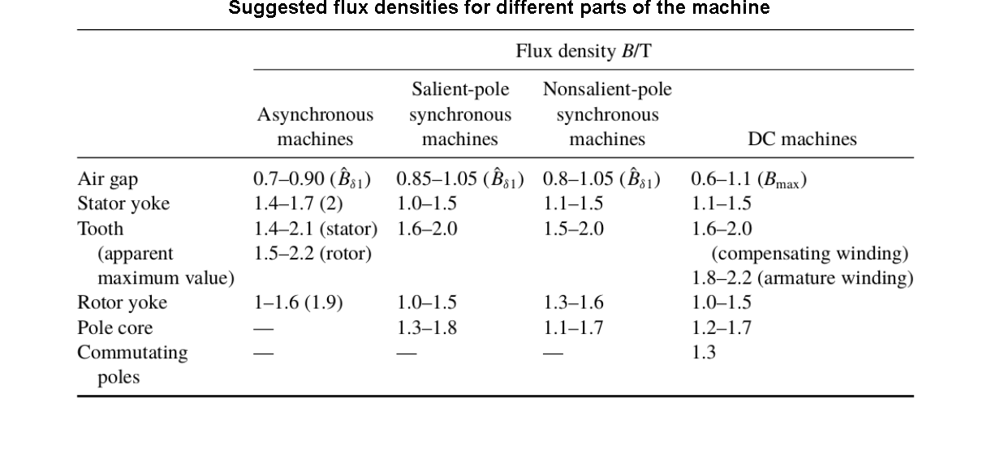
Calculation of winding factors for the particular design
Winding factor is calculated for harmonics up to 31st as well as the fundamental component
n = 1:2:31; % harmonic order kd = sin(n*qs*slot_angle/2)./(qs*sin(n*slot_angle/2)); % distribution factor kp = sin(n*pitch_angle/2); % pitch factor kw = kd.*kp; % winding factor kd1 = kd(1); kp1 = kp(1); kw1 = kw(1); fprintf('Distribution factor for the fundamental component is %g\n',kd1); fprintf('Pitch factor for the fundamental component is %g\n',kp1); fprintf('winding factor for the fundamental component is %g\n',kw1);
Distribution factor for the fundamental component is 0.956677 Pitch factor for the fundamental component is 0.951057 winding factor for the fundamental component is 0.909854
As expected, an attempt of elimination of harmonics and utilization of distributed winding configuration (high number of slots) resulted in a 10 % loss on the fundamental component. This will yield one of the following:
An increase on air gap flux density: This is not desired.
An increase on the number of turns: This will result in a slightly higher cost and lower efficiency
An increase on the machine dimensions (pole area): This will also result in increase of cost and size
Let us see how will these parameters turn out to be...
The resultant distribution, pitch and winding factors for different frequencies are shown below.
As one can observe, the 5th harmonic is totally eliminated and the 7th harmonic is very low. 3rd and 9th harmonic will be eliminated automatically on the line-to-line voltage due to Y connection so that the induced EMF will be an almost harmonic free sinusoidal voltage.
figure; subplot(3,1,1); bar(n,kd,'k','Linewidth',1.5); grid on; set(gca,'FontSize',12); ylabel('Distribution Factor','FontSize',8,'FontWeight','Bold'); set(gca,'xtick',[1:2:9]); set(gca,'ytick',[-1:0.5:1]); xlim([0 10]); subplot(3,1,2); bar(n,kp,'k','Linewidth',1.5); grid on; set(gca,'FontSize',12); ylabel('Chording (Pitch) Factor','FontSize',8,'FontWeight','Bold'); set(gca,'xtick',[1:2:9]); set(gca,'ytick',[-1:0.5:1]); xlim([0 10]); subplot(3,1,3); bar(n,kw,'k','Linewidth',1.5); grid on; set(gca,'FontSize',12); ylabel('Winding Factor','FontSize',8,'FontWeight','Bold'); set(gca,'xtick',[1:2:9]); xlabel('Harmonic Order','FontSize',8,'FontWeight','Bold'); set(gca,'ytick',[-1:0.5:1]); xlim([0 10]);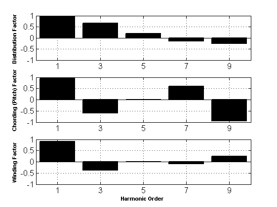
Selection of stator turn numbers
In this part, the turn number selection will be based on the intended induced voltage (from rated voltage rating of the machine), the aimed flux density, the selected dimensions, calculated winding factor and the given rated fundamental frequency of operation.
Erms = Vphase; % volts flux_per_pole = 4*inner_radius*length*Bgap/pole; % weber Nph = Erms/(4.44*frated*flux_per_pole*kw1); fprintf('The aimed induced voltage per phase is %g Volts-rms\n',Erms); fprintf('The aimed flux per pole is %g Weber\n',flux_per_pole); fprintf('The resultant turn number is %g\n',Nph);
The aimed induced voltage per phase is 779.423 Volts-rms The aimed flux per pole is 0.0811632 Weber The resultant turn number is 30.4765
Note that, number of turns per phase is calculated here. Moreover, this is not actually a turn number as it is not an integer value, it will only be used to help for the selection of actual turn number.
For the selection of number of turns, number of turns per coil side (zQ) is varied and alternatives are calculated as follows:
for k = 1:5 zQ = k; pos_Nph = qs*pole*stator_layer*zQ/2; fprintf('Possible Nph = %d, zQ = %d\n',pos_Nph,k); end
Possible Nph = 30, zQ = 1 Possible Nph = 60, zQ = 2 Possible Nph = 90, zQ = 3 Possible Nph = 120, zQ = 4 Possible Nph = 150, zQ = 5
Among the alternatives, the closest turn number is 30 with zQ = 1
If 30 turns per phase is selected, either of length,radius or air gap flux density should be slightly increased. If 60 turns per phase is used, either of length, radius or air gap flux density should be decreased. In the first iteration, Nph = 30 is selected
Nph = 30; zQ = 2*Nph/(qs*pole*stator_layer); % turns fprintf('The selected turn number per phase (Nph) is %g\n',Nph); fprintf('The resultant turn number per coil side (zQ) is %g\n',zQ);
The selected turn number per phase (Nph) is 30 The resultant turn number per coil side (zQ) is 1
Now, for the same amount of induced voltage, increasing the flux desity is not a feasible thing, so the dimensions will be increased slightly.
flux_per_pole = Erms/(4.44*frated*Nph*kw1); % weber fprintf('The resultant flux per pole is %g Weber\n',flux_per_pole);
The resultant flux per pole is 0.0824523 Weber
The old and new multiplications of radius and length are as follows:
rl_multip_old = inner_radius*length; % m^2 rl_multip = Erms*pole/(4.44*Nph*frated*kw1*4*Bgap); % m^2
The length of the machine is increased accordingly. The resultant new machine parameters are also calculated for validation.
new_length = 0.46; % m fprintf('New machine length is %g m\n',new_length); new_Bgap = Erms*pole/(4.44*Nph*frated*kw1*4*new_length*inner_radius); % Tesla new_surface_area = pi*inner_diameter*new_length; % m^2 new_inner_volume = inner_diameter^2*new_length*pi/4; % m^3 new_tan_stress = Ftan/new_surface_area; % P new_Cmech = Prated*1e-3/(inner_diameter^2*new_length*fsync); % kWs/m^3 new_magnetic_loading = new_Bgap; % Tesla new_electric_loading = new_tan_stress/new_magnetic_loading*1e-3; % kA/m Bgap = new_Bgap; % Tesla flux_per_pole = Bgap*4*inner_radius*new_length/pole; % Weber fprintf('New air gap flux density is %g Tesla\n',Bgap); fprintf('New surface area is %g m^2\n',new_surface_area); fprintf('New inner volume is %g m^3\n',new_inner_volume); fprintf('New tangential stress is %g kP\n',1e-3*new_tan_stress); fprintf('New specific machine constant is %g kWs/m^3\n',new_Cmech); fprintf('New magnetic loading is %g Tesla\n',new_magnetic_loading); fprintf('New electric loading is %g kA/m\n',new_electric_loading); fprintf('New flux per pole is %g weber\n',flux_per_pole);
New machine length is 0.46 m New air gap flux density is 0.894418 Tesla New surface area is 0.86708 m^2 New inner volume is 0.130062 m^3 New tangential stress is 30.852 kP New specific machine constant is 297.287 kWs/m^3 New magnetic loading is 0.894418 Tesla New electric loading is 34.4939 kA/m New flux per pole is 0.0824523 weber
The resultant induced voltage turns out to be:
Erms = 4.44*Nph*frated*kw1*flux_per_pole;
fprintf('Resultant induced voltage is %g Volts rms\n',Erms);
Resultant induced voltage is 779.423 Volts rms
MMF Calculation
MMF calculation is important to check whether the air gap flux density can be achieved with this machine geometry (air gap distance).
peak_current = Irated*sqrt(2); % amps peak_MMF = (phase/2)*(4/pi)*(Nph*Irated*sqrt(2)/pole)*kw1; % amps fprintf('The peak current is %g Amps\n',peak_current); fprintf('The peak MMF is %g Amps\n',peak_MMF);
The peak current is 932.835 Amps The peak MMF is 8104.91 Amps
Now, the air gap flux density can be calculated from the simple magnetic equivalent circuit loop with length = g and H = B/u0.
u0 = 4*pi*1e-7;
Bgap_expected = peak_MMF*u0/(air_gap_distance*1e-3);
fprintf('The expected peak flux density is %g Tesla with the given gap\n',Bgap_expected);
The expected peak flux density is 3.39497 Tesla with the given gap
The resultant flux density is very very high! Actually, the path of the magnetic circuit is not only composed of the air gap (in practice, the cores are not infinitely permeable), moreover, the effective air gap distance should be considered. Therefore, this result is lower in practice.
Up to now, the Carter's coefficienct for effective air gap length calculation is not calculated, but since it is directly related to the slot opening, a slot opening value will be selected prematurely to correct the air gap flux density. In addition, it will be assumed that, 5 % of the MMF is dropped on the core materials.
actual_peak_MMF = peak_MMF*0.95; % amps stator_slot_opening = 4; % mm rotor_bar_opening = 4; % mm
Also, there will be another assumption on the rotor slot pitch for Carter's coefficienct calculation. At this point, a lower number of bars are assumed on the rotor (around 80 percent). Therefore, the rotor bar pitch will be calculated accordingly:
rotor_bar_pitch = stator_slot_pitch/0.8; % m k = (stator_slot_opening/air_gap_distance)/(5+stator_slot_opening/air_gap_distance); be = k*stator_slot_opening; kcs = stator_slot_pitch*1e3/(stator_slot_pitch*1e3-be); k = (rotor_bar_opening/air_gap_distance)/(5+rotor_bar_opening/air_gap_distance); be = k*rotor_bar_opening; kcr = rotor_bar_pitch*1e3/(rotor_bar_pitch*1e3-be); effective_air_gap_distance = air_gap_distance*kcs*kcr; Bgap_corrected = actual_peak_MMF*u0/(effective_air_gap_distance*1e-3); fprintf('Corrected air gap peak MMF is %g Amps\n',actual_peak_MMF); fprintf('Carters coefficient for stator (kcs) is %g\n',kcs); fprintf('Carters coefficient for rotor (kcr) is %g\n',kcr); fprintf('Effective air gap distance is %g\n',effective_air_gap_distance); fprintf('Corrected peak flux density is %g Tesla\n',Bgap_corrected);
Corrected air gap peak MMF is 7699.66 Amps Carters coefficient for stator (kcs) is 1.04189 Carters coefficient for rotor (kcr) is 1.03324 Effective air gap distance is 3.22956 Corrected peak flux density is 2.99598 Tesla
The result show that, the air gap flux desity is still too high. This is actually a design fail and caused by the utilization of air gap diatance calculation formula provided by the book. When we combine the flux density and MMF equations, we observe that the following modifications can be considered to decrease flux density:
Pole number, phase number, winding factor cannot be changed.
Turn number should be decreased. This is possible, but it will cause the design to go to the very beginning.
The air gap distance should be increased. This will be done to obtained the acceptable air gap flux density.
Correction of Air Gap Distance
I am not sure about this, because the original 3 mm air gap distance seems reasonable at the first glance, and many of my friends selected air gap distance as 3 mm or below. But, I saw that none of them checked the MMF and see how much flux density occurs on the MMF.
There are of course trade-offs for choosing the suitable air gap distance. Increasing the air gap leads to a decrease in eddy current losses and rotor surface losses (and thus better efficiency) while it will yield a higher magnetizing current.
Now, as the flux density is 3 times higher than the acceptable values, I increase the air gap distance 3 times at first iteration. The effective air gap distance is again calculated as follows.
gap_distance_new = air_gap_distance*3.5; % mm rotor_bar_pitch = stator_slot_pitch/0.8; % m k = (stator_slot_opening/gap_distance_new)/(5+stator_slot_opening/gap_distance_new); be = k*stator_slot_opening; kcs = stator_slot_pitch*1e3/(stator_slot_pitch*1e3-be); k = (rotor_bar_opening/gap_distance_new)/(5+rotor_bar_opening/gap_distance_new); be = k*rotor_bar_opening; kcr = rotor_bar_pitch*1e3/(rotor_bar_pitch*1e3-be); effective_gap_distance_new = gap_distance_new*kcs*kcr; Bgap_corrected_new = actual_peak_MMF*u0/(effective_gap_distance_new*1e-3); fprintf('Carters coefficient for stator (kcs) is %g\n',kcs); fprintf('Carters coefficient for rotor (kcr) is %g\n',kcr); fprintf('Effective air gap distance is %g\n',effective_gap_distance_new); fprintf('Corrected peak flux density is %g Tesla\n',Bgap_corrected_new);
Carters coefficient for stator (kcs) is 1.01371 Carters coefficient for rotor (kcr) is 1.01094 Effective air gap distance is 10.7603 Corrected peak flux density is 0.899201 Tesla
The desired air gap flux density (0.9 Tesla) is now achieved by an air gap as high as 10.5 mm. Again, I am not sure if this is a reasonable air gap, but the analytical calculations shows that it is.
Rotor bar number selection
In our text book, the equation 7.115 is provided for rotor slot number selection for a skew of one stator slot as follows:
Qr_suggested = (6*qs+4)*pole_pair; % eqn 7.115 of the book fprintf('Suggested rotor slot number is %g.\n',Qr_suggested);
Suggested rotor slot number is 102.
A more detailed analysis is required for the selection of rotor slot number. There are various combinations (with the stator slot number) that should be avoided. Some of the reasons are; limiting the synchronous torques, avoiding synchronous torques created by slot harmonics, avoiding synchronous torques during running, avoiding dangerous slot harmonics, avoiding mechanical vibrations.
In the following routine, possible rotor slot numbers are obtained by the use of pole and phase number and they are checked whether they should be avoided or not.
for k = 1:10 Qr = k*pole*phase; p = pole_pair; if Qr == Qs || Qr == 0.5*Qs || Qr == 2*Qs || Qr == Qs + 2*p ||... Qr == Qs - 2*p || Qr == 2*Qs + 2*p || Qr == 2*Qs - 2*p ||... Qr == Qs + p || Qr == Qs - p || Qr == 0.5*Qs + p ||... Qr == 0.5*Qs - p || Qr > 1.25*Qs result = 0; else for n = 1:10 if Qr == 6*p*n || Qr == 6*p*n + 2*p || Qr == 6*p*n - 2*p ||... Qr == 6*p*n + 1 || Qr == 6*p*n - 1 ||... Qr == 6*p*n + 2*p + 1 || Qr == 6*p*n + 2*p - 1 ||... Qr == 6*p*n - 2*p + 1 || Qr == 6*p*n - 2*p - 1 ||... Qr == 6*p*n + 2*p || Qr == 6*p*n - 2*p result = 0; else result = 1; end end end if result == 1 fprintf('%d rotor slot number is usable\n',Qr); end end
18 rotor slot number is usable 36 rotor slot number is usable 54 rotor slot number is usable 72 rotor slot number is usable 108 rotor slot number is usable
As it turns out, the suggested rotor slot number (102) is not usable. among the alternatives, rotor slot number of 72 is selected.
Qr = 72; qr = Qr/(pole*phase); fprintf('Selected rotor slot number is %g.\n',Qr); fprintf('Corresponding rotor number of slots per pole per phase is %g.\n',qr);
Selected rotor slot number is 72. Corresponding rotor number of slots per pole per phase is 4.
It should be noted that, this rotor slot number in combination with a stator slot number of 90 may cause synchronous torques at standstill.
Selection of stator conductors
First of all, copper conductors will be used for stator and aluminium bars will be used for squirrel cage rotor. the selection of conductors is based on two things: current carrying capability and frequency (skin effect).
Stator copper conductor design:
The maximum fundamental frequency that the windings will be subjecdted to can be calculated by the maximum speed of the train. The motor will be driven by an inverter with possibly scalar control techniques with variable voltage - variable frequency capability to adjust the speed of the train.
fmax = frated*vmax/vrated; % Hz fprintf('The maximum fundamental frequency that the stator windings will be subjected to is %g Hz.\n',fmax);
The maximum fundamental frequency that the stator windings will be subjected to is 151.667 Hz.
This approach is valid up to a point since only the fundamental components are considered. A three phase inverter do not normally produce low order harmonics by the utilization of sinusoidal pulse width modulation techniques (SPWM). The harmonic frequencies that will show will be around the switching frequency and its integer multiples. From past experience, the converters around such kind of power ratings are driven with switching frequencies up to 1 kHz (usually 800 Hz). In this design, these harmonic components will be neglected for simplicity. One reason is that, an induction motor is an inductive load such that, the harmonics around 1 kHz are easily filtered and not reflected to the current waveform.
copper_resistivity = 1.7e-8; % Ohm*m copper_permeability = 1.256629e-6; % H/m angular_frequency = 2*pi*fmax; % rad/sec skin_depth = sqrt(copper_resistivity*2/(angular_frequency*copper_permeability)); fprintf('Skin depth of Copper @ %g Hz is %g mm\n',fmax,skin_depth*1000); fprintf('A stator conductor diameter of which is not higher than %g mm should be selected.\n',2*skin_depth*1000);
Skin depth of Copper @ 151.667 Hz is 5.32845 mm A stator conductor diameter of which is not higher than 10.6569 mm should be selected.
The suggested current densities for a 6 pole machine is between 5-8 A/mm^2. In this design, forced air cooling will be used. A current density of 7 A/mm^2 is feasible.
current_density = 7; % A/mm^2 copper_area = Irated/current_density; % mm^2 copper_radius = sqrt(copper_area/pi); % mm copper_diameter = copper_radius*2; % mm fprintf('The selected current density is %g A/mm^2\n',current_density); fprintf('The resultant required wire area is %g mm^2\n',copper_area); fprintf('The minimum copper diameter that can be used is %g mm\n',copper_diameter);
The selected current density is 7 A/mm^2 The resultant required wire area is 94.2306 mm^2 The minimum copper diameter that can be used is 10.9535 mm
From these results, standard "AWG gauge 0" is selected which has a diameter of 8.25 mm and maximum frequency of 250 Hz. Two of these conductors will be used in parallel.
wire_diameter = 8.25246; % mm wire_radius = wire_diameter/2; % mm wire_strand = 2; wire_area = pi*wire_radius^2; % mm^2 stator_current_density = Irated/(wire_area*wire_strand); % A/mm^2 fprintf('Selected wire is AWG Gauge 0.\n'); fprintf('Wire diameter is %g mm and area is %g mm^2.\n',wire_diameter,wire_area); fprintf('%g strands of wires will be used in parallel.\n',wire_strand); fprintf('The resultant current density is %g A/mm^2\n',stator_current_density);
Selected wire is AWG Gauge 0. Wire diameter is 8.25246 mm and area is 53.488 mm^2. 2 strands of wires will be used in parallel. The resultant current density is 6.16599 A/mm^2
The conductors wounded on the stator slots will be indulated. This is important for selection of the slot dimensions (required area of the stator slots). The required insulation is selected as 2 % as a rule of thumb.
wire_diameter_insulation = wire_diameter*1.02; % mm wire_area_insulation = pi*(wire_diameter_insulation/2)^2; % mm^2 total_stator_wire_area = wire_strand*wire_area_insulation; % mm^2 fprintf('Wire diameter with insulation is %g mm and area is %g mm^2.\n',wire_diameter_insulation,wire_area_insulation); fprintf('Total wire area (one turn) is %g mm^2.\n',total_stator_wire_area);
Wire diameter with insulation is 8.41751 mm and area is 55.649 mm^2. Total wire area (one turn) is 111.298 mm^2.
Selection of rotor conductors
The rotor bars will be aluminium as stated before. From my research, I saw that usually aluminium bars are used for squirrel cage rotors of asynchronous machines. The production is usually achieved by die cast aluminum poured into the rotor after the laminations are stacked.
The skin effect is much more relaxed at steady state operation for rotor conductors because the rotor induced current frequency for low slip values is very low. At standstill and startup, however, the frequency is close to the stator frequency. The skin depth of aluminium is calculated as follows:
aluminium_resistivity = 2.65e-8; % Ohm*m aluminium_permeability = 1.256665e-6; % H/m angular_frequency = 2*pi*fmax; % rad/sec skin_depth_al = sqrt(aluminium_resistivity*2/(angular_frequency*aluminium_permeability)); fprintf('Skin depth of Aluminium @ %g Hz is %g mm\n',fmax,skin_depth_al*1000); fprintf('A rotor conductor diameter of which is not higher than %g mm should be selected.\n',2*skin_depth_al*1000);
Skin depth of Aluminium @ 151.667 Hz is 6.65263 mm A rotor conductor diameter of which is not higher than 13.3053 mm should be selected.
This information will be used for the calculation of rotor bar resistance.
Since the frequency of the rotor windings are low, the induced voltages in the squirrel cage winding is also very low. Therefore, no insulation layer is required between the bars as well as between the bar and rotor core.
As for the current carrying capability, as discussed before, the rotor induced current will be low at steady state operations. Moreover, the rotor bars are not like conventional conductors and have a much wider area. Therefore, no other means of analysis is required for the rotor bar current carrying capability.
Stator Slot Sizing
The first step selection of the stator slot fill factor. Generally, a fill factor of between 0.4-0.44 is used for machines with such power ratings. In this design, fill factor is selected as 0.44.
stator_fill_factor = 0.44;
As the area that the conductors (with insulation) will utilize is known, the useful slot area can be calculated.
useful_slot_area = total_stator_wire_area*zQ*stator_layer/stator_fill_factor; % mm^2 fprintf('Selected stator slot fill factor is %g\n',stator_fill_factor); fprintf('Useful slot area of the stator is %g mm^2\n',useful_slot_area);
Selected stator slot fill factor is 0.44 Useful slot area of the stator is 505.9 mm^2
The shape of the stator slot is selected as trapezoidal semiclosed shape. In the figure below, the shape of the stator slot and the corresponding dimensions are shown.
I = imread('stator_slot.png'); figure; imshow(I); title('stator Slot Shape and Dimensions','FontSize',18,'FontWeight','Bold');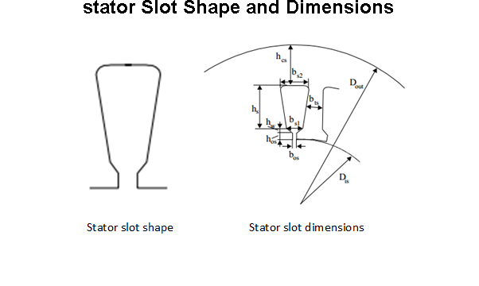
The stator slot pitch (Tus) has already been calculated. First thing to calculate is the stator slot tooth width (bts). For this, the flux passing through one slot will be utilized. Assuming all the flux passes through the slot teeth, one can write Equation 1. The stacking factor is selected as 0.96. By using Equation 2 derived from equation 1:
Tus = stator_slot_pitch*1e3; % mm stator_stacking_factor = 0.96; Kfe = stator_stacking_factor; bts = (Bgap*Tus)/(Bstooth*Kfe); % mm fprintf('Stator slot pitch (Tus) is %g mm\n',Tus); fprintf('Stator stacking factor (Kfe) is %g mm\n',Kfe); fprintf('Stator slot tooth width (bts) is %g mm\n',bts);
Stator slot pitch (Tus) is 20.944 mm Stator stacking factor (Kfe) is 0.96 mm Stator slot tooth width (bts) is 10.2701 mm
Now, according to the information obtained up to now, some other dimensions are chosen as follows:
bos = 4; % mm hos = 2; % mm hw = 3; % mm fprintf('Stator slot opening width (bos) is %g mm\n',bos); fprintf('Stator slot opening height (hos) is %g mm\n',hos);
Stator slot opening width (bos) is 4 mm Stator slot opening height (hos) is 2 mm
The bottom width (bs1) of the stator slot can now be calculated by the use of circumference of the stator slot as shown in Equation 3.
bs1 = pi*(inner_diameter*1e3+2*hos+2*hw)/Qs-bts; % mm fprintf('The bottom stator slot width (bs1) is %g mm\n',bs1);
The bottom stator slot width (bs1) is 11.0229 mm
The top width (bs2) and useful height (hs) of the stator slot can now be calculated by the use of: 1) required slot area, 2) bottom width (bs1) of the stator slot. Using Equations 4 and 5, Equation 6 can be derived.
bs2 = sqrt(4*useful_slot_area*tan(pi/Qs)+bs1^2); % mm
By using Equation 4, Equation 7 can be derived.
hs = 2*useful_slot_area/(bs1+bs2); % mm fprintf('The top stator slot width (bs2) is %g mm\n',bs2); fprintf('The useful stator slot height (hs) is %g mm\n',hs);
The top stator slot width (bs2) is 13.8626 mm The useful stator slot height (hs) is 40.6582 mm
For the calculation of the height of the stator back iron or yoke (hcs), the dimansions that have been established so far can be utilized. Outer diameter, inner diameter, and slot dimensions are known. By Equation 8:
hcs = (1e3*outer_diameter-(1e3*inner_diameter+2*(hos+hw+hs)))/2; % mm fprintf('The height of stator back iron is (hcs) is %g mm\n',hcs);
The height of stator back iron is (hcs) is 214.342 mm
Now, the flux densities at the different parts of the core should be verified to avoid saturation! for the stator teeth, the design was based on the flux density, so no verification is required. For the back iron, flux density is calculated as follows.
Bcs = flux_per_pole/(2*new_length*hcs*1e-3); % T fprintf('The aimed stator back iron flux density was %g Tesla and the resultant values is %g Tesla.\n',Bsyoke,Bcs);
The aimed stator back iron flux density was 1.6 Tesla and the resultant values is 0.418127 Tesla.
The resultant yoke flux density is too low. This is actually a turning point for the design.
Low back iron flux density is actually good because there is no risk of saturation and more importantly, the core loss is expected to be less.
To increase the back iron flux density, the outer diameter can be decreased. This time, the mass of the core will be decreased, so that the core loss is also decrased.
All in all, a low flux density may or may not yield a decrease on the core loss.
A new outer diameter will be calculated to meet the aimed yoke flux density, but which outer diameter to be used will be decided later.
Bcs_new = 1.45; % Tesla hcs_new = flux_per_pole/(2*length*Bcs_new*1e-3); % mm outer_diameter_new = (2*hcs_new+(1e3*inner_diameter+2*(hos+hw+hs)))*1e-3; % m fprintf('The aimed stator back iron flux density is %g Tesla.\n',Bcs_new); fprintf('The new back iron height is %g mm.\n',hcs_new); fprintf('The new outer diameter is %g m.\n',outer_diameter_new);
The aimed stator back iron flux density is 1.45 Tesla. The new back iron height is 63.1818 mm. The new outer diameter is 0.81768 m.
Stator MMFS
The B-H data of the selected core lamination iron is shown in the figure below.
I = imread('B H.png'); figure; imshow(I); title('B H Data of the Selected Iron Core Lamination','FontSize',18,'FontWeight','Bold');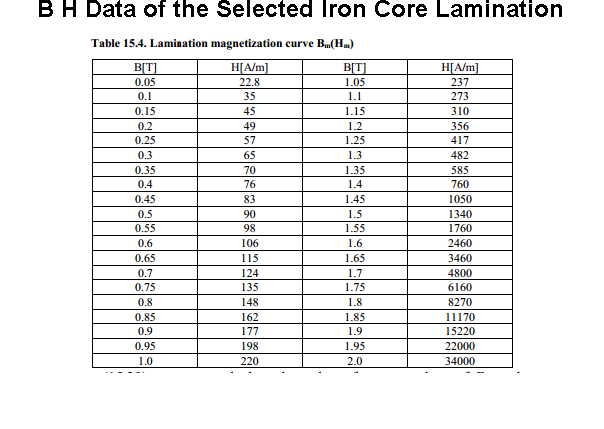
The stator teeth MMF and back iron MMF can be calculated by using the selected tooth and yoke flux density.
Hts = 15220; % A/m MMFts = Hts*1e-3*(hs+hos+hw); % Amps fprintf('The magnetic field intensity of the stator teeth is %g A/m.\n',Hts); fprintf('The peak MMF of the teeth is %g A.\n',MMFts); Hys = 2460; % A/m MMFys = Hys*1e-3*(hcs); % Amps fprintf('The magnetic field intensity of the stator yoke is %g A/m.\n',Hys); fprintf('The peak MMF of the yoke is %g A.\n',MMFys);
The magnetic field intensity of the stator teeth is 15220 A/m. The peak MMF of the teeth is 694.918 A. The magnetic field intensity of the stator yoke is 2460 A/m. The peak MMF of the yoke is 527.281 A.
Rotor Bar Sizing
The fill factor of the rotor bars will be 1 since the bars are filled with totally aluminium.
The shape of the rotor slot is selected. In the figure below, the shape of the rotor slot and the corresponding dimensions are shown.
I = imread('rotor_slot.png'); figure; imshow(I); title('Rotor Slot Shape and Dimensions','FontSize',18,'FontWeight','Bold');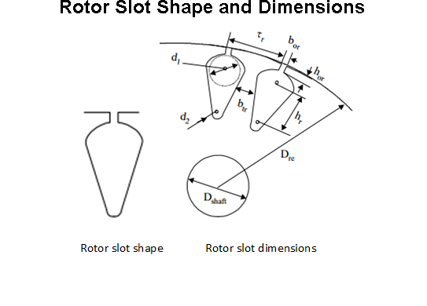
The rotor slot pitch (Tur) can be calculated as follows similarly.
rotor_slot_pitch = pi*(1e3*inner_diameter-2*air_gap_distance)/Qr; % mm Tur = rotor_slot_pitch; % mm fprintf('Rotor slot pitch (Tur) is %g mm\n',Tur);
Rotor slot pitch (Tur) is 25.9181 mm
The rotor slot tooth width (btr) is also calculated with the same method, by using the tooth flux density information. Assuming all the flux passes through the slot teeth, one can write Equation 9. The stacking factor is the same.
rotor_stacking_factor = 0.96; Kfe = rotor_stacking_factor; btr = (Bgap*Tur)/(Brtooth*Kfe); % mm fprintf('Rotor stacking factor (Kfe) is %g\n',Kfe); fprintf('Rotor slot tooth width (btr) is %g mm\n',btr);
Rotor stacking factor (Kfe) is 0.96 Rotor slot tooth width (btr) is 12.0738 mm
Now, according to the information obtained up to now, some other dimensions are chosen as follows:
hor = 2; % mm bor = 4; % mm fprintf('Rotor slot opening width (bor) is %g mm\n',bor); fprintf('Rotor slot opening height (hor) is %g mm\n',hor);
Rotor slot opening width (bor) is 4 mm Rotor slot opening height (hor) is 2 mm
Calculation of the required slot area is again based on the current requirement. The bar current on the rotor can be calculated by using Equation 10. The current density on the rotor bar is selected as 6 A/mm^2. By that information, the rotor slot area is calculated based on Equation 11. The end ring current of the rotor is calculated basen on Equation 12. The current density of the end rings should be selected small. Here, it is selected 78 % of the bar current density. The end ring area is calculated based on Equation 13.
KI = 0.8*power_factor+0.2; rotor_bar_current = KI*2*phase*Nph*kw1*Irated/Qr; % amps Ib = rotor_bar_current; % amps Jrotor = 6; % A/mm^2 Aru = Ib/Jrotor; % mm^2 Ier = Ib/(2*sin(2*pi/Qr)); % A Jer = 0.78*Jrotor; % A/mm^2 Aer = Ier/Jer; % mm^2 fprintf('Rotor bar current is %g A.\n',Ib); fprintf('Rotor bar current density is %g A/mm^2.\n',Jrotor); fprintf('Rotor bar slot area is %g mm^2.\n',Aru); fprintf('Rotor end ring current is %g A.\n',Ier); fprintf('Rotor end ring current density is %g A/mm^2.\n',Jer); fprintf('Rotor end ring area is %g mm^2.\n',Aer);
Rotor bar current is 1332.34 A. Rotor bar current density is 6 A/mm^2. Rotor bar slot area is 222.056 mm^2. Rotor end ring current is 7643.43 A. Rotor end ring current density is 4.68 A/mm^2. Rotor end ring area is 1633.21 mm^2.
The top rotor bar diameter (d1) is calculated based on Equation 14.
d1 = (pi*(1e3*inner_diameter-2*air_gap_distance-2*hor)-Qr*btr)/(pi+Qr); % mm
The bottom rotor bar diameter (d2) and the rotor slot height (hr) are are calculated based on Equations 15 and 16 by utilizing the predetermined rotor slot area information.
d2 = 3; % mm hr = (d1-d2)/(2*tan(pi/Qr)); % mm rotor_slot_area = (pi/8)*(d1^2+d2^2)+(d1+d2)*hr/2; % mm^2 Ab = rotor_slot_area; % mm^2 fprintf('Rotor bar top diameter (d1) is %g mm.\n',d1); fprintf('Rotor bar bottom diameter (d2) %g mm.\n',d2); fprintf('Rotor bar height (hr) %g mm.\n',hr); fprintf('Rotor slot area is %g mm^2.\n',Ab);
Rotor bar top diameter (d1) is 13.0983 mm. Rotor bar bottom diameter (d2) 3 mm. Rotor bar height (hr) 115.645 mm. Rotor slot area is 1001.75 mm^2.
The resultant rotor slot area is much sufficient to carry the current. Next is the calculation of rotor back core height (hcr). A similar procedure can be applied (Equation 17).
hcr = 1e3*flux_per_pole/(2*length*Bryoke); % mm fprintf('The height of the rotor back iron (hcr) is %g mm.\n',hcr);
The height of the rotor back iron (hcr) is 57.2585 mm.
Finally, the shaft diameter should be determined. The maximum shaft diameter can be calculated by using the Equation 18.
Dshaftmax = inner_diameter*1e3-2*air_gap_distance-2*(hor+hr+hcr+(d1+d2)/2); % mm fprintf('The maximum shaft diameter is %g mm.\n',Dshaftmax); Dshaft = 150; % mm fprintf('A shaft diameter of %g mm is selected.\n',Dshaft);
The maximum shaft diameter is 228.095 mm. A shaft diameter of 150 mm is selected.
Equivalent core length with cooling
nv = 10; % number of cooling ducts bv = 5; % length of cooling duct, mm g = gap_distance_new; % mm k = (bv/g)/(5+bv/g); bve = k*bv; % mm eqv_length = length-1e-3*nv*bve+1e-3*2*g; % m fprintf('Number of cooling ducts is %g.\n',nv); fprintf('Length of a cooling duct is %g mm.\n',bv); fprintf('The euivalent core length with cooling ducts is %g m.\n',eqv_length);
Number of cooling ducts is 10. Length of a cooling duct is 5 mm. The euivalent core length with cooling ducts is 0.466652 m.
Effective air gap length
g = gap_distance_new; % mm b1 = bs1; % mm k = (b1/g)/(5+b1/g); be = k*b1; % mm kcs = Tus/(Tus-be); k = (d1/g)/(5+d1/g); be = k*d1; % mm kcr = Tur/(Tur-be); geff = g*kcs*kcr; % mm fprintf('Carters coefficienct for stator is %g.\n',kcs); fprintf('Carters coefficienct for rotor is %g.\n',kcr); fprintf('The effective air gap length is %g mm.\n',geff);
Carters coefficienct for stator is 1.10051. Carters coefficienct for rotor is 1.11224. The effective air gap length is 12.8522 mm.
Rotor MMFS
Same B-H data can be used. The rotor teeth MMF and back iron MMF can be calculated by using the selected tooth and yoke flux density.
Htr = 15220; % A/m MMFtr = Htr*1e-3*(hr+hor+(d1+d2)/2); % Amps fprintf('The magnetic field intensity of the rotor teeth is %g A/m.\n',Htr); fprintf('The peak MMF of the teeth is %g A.\n',MMFtr); Hyr = 2460; % A/m MMFyr = Hyr*1e-3*(hcr); % Amps fprintf('The magnetic field intensity of the rotor yoke is %g A/m.\n',Hyr); fprintf('The peak MMF of the yoke is %g A.\n',MMFyr);
The magnetic field intensity of the rotor teeth is 15220 A/m. The peak MMF of the teeth is 1913.06 A. The magnetic field intensity of the rotor yoke is 2460 A/m. The peak MMF of the yoke is 140.856 A.
Magnetizing Inductance and Current
Calculation of the magnetizing inductance is based on the equation derived in class. The magnetizing reactance is also calculated at rated frequency. Finally, neglecting the core loss in the equivalent circuit, the magnetizing current is calculated.
Lm = (phase/2)*inner_diameter*u0*eqv_length*(kw1*Nph)^2/(pole_pair^2*air_gap_distance*1e-3); % Henries Xm = 2*pi*frated*Lm; % Ohms Imag = Erms/Xm; % amps fprintf('The magnetizing inductance of the machine is %g mH.\n',Lm*1e3); fprintf('The magnetizing reactance at fundamental frequency is %g Ohms.\n',Xm); fprintf('The magnetizing current is %g A.\n',Imag);
The magnetizing inductance of the machine is 14.5636 mH. The magnetizing reactance at fundamental frequency is 7.13744 Ohms. The magnetizing current is 109.202 A.
Leakage Inductances
Calculation of stator leakage inductance is again based on the equation derived in class. The leakage reactance is also calculated at rated frequency.
P1 = u0*eqv_length*((hos/bos)+(hs/(3*bs2))); % permeance Lph = P1*4*(Nph*kw1)^2*phase/Qs; % Henries Xph = 2*pi*frated*Lph; % ohms fprintf('The stator leakage inductance of the machine is %g uH.\n',Lph*1e6); fprintf('The stator leakage reactance at fundamental frequency is %g mOhms.\n',Xph*1e3); % Calculation of rotor leakage inductance is a little more tricky because % both rotor bar and end ring permeances are considered this time. % The leakage reactance is also calculated at rated frequency. Pr = 0.66 + 2*hr/(3*(d1+d2)) + hor/bor; % permeance Pdr = 0.9*Tur/(kcs*g)*1e-2; % permeance Kx = 1; % skin effect coefficient P2 = u0*eqv_length*(Kx*Pr+Pdr); % permeance Lrp = P2*4*(Nph*kw1)^2*phase/Qr; % Henries Xrp = 2*pi*frated*Lrp; % ohms fprintf('The rotor leakage inductance referred to the stator is %g uH.\n',Lrp*1e6); fprintf('The rotor leakage reactance referred to the stator is %g mOhms.\n',Xrp*1e3);
The stator leakage inductance of the machine is 86.0795 uH. The stator leakage reactance at fundamental frequency is 42.1866 mOhms. The rotor leakage inductance referred to the stator is 434.671 uH. The rotor leakage reactance referred to the stator is 213.027 mOhms.
Stator copper winding and rotor bar resistance
For the calculation of stator winding resistance of one phase, its length is first calculated considering both machine length and end windings.
pole_pitch = phase*stator_slot_pitch*qs; % m pitch_factor = pitch_angle/pi; y = pitch_factor*pole_pitch; % m lend = pi*y/2+0.018; % m le = 2*(length+lend); % m fprintf('The stator pole pitch is %g m.\n',pole_pitch); fprintf('The stator pitch factor is %g.\n',pitch_factor); fprintf('The resultant end winding length is %g m.\n',lend); fprintf('The mean length turn (MLT) of stator is %g m.\n',le);
The stator pole pitch is 0.314159 m. The stator pitch factor is 0.8. The resultant end winding length is 0.412784 m. The mean length turn (MLT) of stator is 1.72557 m.
Copper resistivity at 80 0C is used. the winding area is also known.
rho_20 = 1.78*1e-8; % ohm*m rho_80 = rho_20*(1+1/273*(80-20)); % ohm*m Rsdc = rho_80*le*Nph/(1e-6*wire_area*wire_strand); % ohms Rsac = Rsdc; % ohms Rph = Rsac; % ohms fprintf('The copper resistivity at 80 0C is %g Ohm.m.\n',rho_80); fprintf('The DC resiatance of the stator phase winding is %g mOhms.\n',Rsdc*1e3); fprintf('As the wire is selected considering skin effect, the AC resistance will be the same.\n'); fprintf('The AC resiatance of the stator phase winding is %g mOhms.\n',Rsac*1e3);
The copper resistivity at 80 0C is 2.17121e-08 Ohm.m. The DC resiatance of the stator phase winding is 10.5067 mOhms. As the wire is selected considering skin effect, the AC resistance will be the same. The AC resiatance of the stator phase winding is 10.5067 mOhms.
The calculation of rotor bar resistance is similar.
rho_al = 3.1*1e-8; % ohm*m rho_al_80 = rho_al*(1+1/273*(80-20)); % ohm*m Kr = 1.74; Dre = inner_radius-1e-3*g; % m b = hr+hor+(d1+d2)/2; % mm ler = 1e-3*pi*(Dre+b)/Qr; % m Rbe = rho_al_80*((length*Kr/(Ab*1e-6))+(ler/(2*Aer*1e-6*(sin(3*pi/Qr))^2))); %ohms R2p = Rbe*4*phase/Qr*(Nph*kw1)^2; % ohms fprintf('The end winding length is %g m.\n',ler); fprintf('The aluminium resistivity at 80 0C is %g Ohm.m.\n',rho_al_80); fprintf('The resiatance of the rotor phase winding is %g uOhms.\n',Rbe*1e6); fprintf('The rotor resistance referred to the stator is %g mOhms.\n',R2p*1e3);
The end winding length is 0.00549708 m. The aluminium resistivity at 80 0C is 3.78132e-08 Ohm.m. The resiatance of the rotor phase winding is 33.2912 uOhms. The rotor resistance referred to the stator is 4.13394 mOhms.
The per unit values
Base values
Vbase = Vrated; % volts Sbase = Prated/power_factor; % VA Zbase = Vbase^2/Sbase; % ohms % pu values Xm_pu = 100*Xm/Zbase; % percent Xph_pu = 100*Xph/Zbase; % percent Xrp_pu = 100*Xrp/Zbase; % percent Rph_pu = 100*Rph/Zbase; % percent R2p_pu = 100*R2p/Zbase; % percent fprintf('The stator winding resistance pu is %g %%.\n',Rph_pu); fprintf('The rotor winding resistance pu is %g %%.\n',R2p_pu); fprintf('The stator leakage reactance pu is %g %%.\n',Xph_pu); fprintf('The rotor leakage reactance pu is %g %%.\n',Xrp_pu); fprintf('The magnetizing reactance pu is %g %%.\n',Xm_pu);
The stator winding resistance pu is 0.858049 %. The rotor winding resistance pu is 0.337604 %. The stator leakage reactance pu is 3.44523 %. The rotor leakage reactance pu is 17.3972 %. The magnetizing reactance pu is 582.89 %.
Mass Calculations
Copper mass
copper_area = (1e-6*wire_area*wire_strand); % m^2 copper_length = phase*le*Nph; % m copper_volume = copper_area*copper_length; % m^3 copper_density = 8.96; % gr/cm^3 copper_density = copper_density*1e3; % kg/m^3 copper_mass = copper_density*copper_volume; % kg fprintf('Total copper volume is %g m^3.\n',copper_volume); fprintf('Total copper mass is %g kg.\n',copper_mass); % Aluminium mass aluminium_area1 = (1e-6*Ab); % m^2 aluminium_area2 = (1e-6*Aer); % m^2 aluminium_length1 = Qr*length; % m aluminium_length2 = Qr*ler; % m aluminium_volume = aluminium_area1*aluminium_length1 + aluminium_area2*aluminium_length2; % m^3 aluminium_density = 2.70; % gr/cm^3 aluminium_density = aluminium_density*1e3; % kg/m^3 aluminium_mass = aluminium_density*aluminium_volume; % kg fprintf('Total aluminium volume is %g m^3.\n',aluminium_volume); fprintf('Total aluminium mass is %g kg.\n',aluminium_mass); % Stator iron (core) mass density_iron = 7800; % kg/m^3 Gsteeth = density_iron*Qs*bts*1e-3*(hs+hw+hos)*1e-3*length*Kfe; % kg fprintf('Stator teeth iron mass is %g kg.\n',Gsteeth); Gsyoke = density_iron*pi/4*(outer_diameter_new^2-(outer_diameter_new-2*hcs*1e-3)^2)*length*Kfe; % kg fprintf('Stator back iron mass is %g kg.\n',Gsyoke); Gs = Gsteeth+Gsyoke; % kg fprintf('Stator total iron mass is %g kg.\n',Gs); % Rotor iron (core) mass Grteeth = density_iron*Qr*btr*1e-3*(hr+(d1+d2)/2)*1e-3*length*Kfe; % kg fprintf('Rotor teeth iron mass is %g kg.\n',Grteeth); total_mass = Gs + aluminium_mass + copper_mass + Grteeth; % kg fprintf('Total mass is %g kg.\n',total_mass);
Total copper volume is 0.0166135 m^3. Total copper mass is 148.857 kg. Total aluminium volume is 0.0331031 m^3. Total aluminium mass is 89.3784 kg. Stator teeth iron mass is 142.205 kg. Stator back iron mass is 1368.98 kg. Stator total iron mass is 1511.18 kg. Rotor teeth iron mass is 362.328 kg. Total mass is 2111.74 kg.
Copper Losses
Pcus = 3*Irated^2*Rph; % watts Pcur = 3*Irated^2*R2p; % watts Pcu = Pcus + Pcur; % watts fprintf('Total stator copper loss is %g Watts.\n',Pcus); fprintf('Total rotor copper loss is %g Watts.\n',Pcur); fprintf('Total copper loss is %g Watts.\n',Pcu);
Total stator copper loss is 13714.2 Watts. Total rotor copper loss is 5395.91 Watts. Total copper loss is 19110.1 Watts.
Core losses
stator fundamental teeth core loss
Kt = 1.7; p10 = 2; Pc_stator_teeth1 = Kt*p10*(frated/50)^1.3*Bstooth^1.7*Gsteeth; % watts % stator fundamental back iron core loss Ky = 1.6; Pc_stator_yoke1 = Ky*p10*(frated/50)^1.3*Bsyoke^1.7*Gsyoke; % watts % stator total core loss (fundamental) Pcs1 = Pc_stator_teeth1+Pc_stator_yoke1; % watts fprintf('stator core loss only at fundamental frequency is %g Watts.\n',Pcs1);
stator core loss only at fundamental frequency is 19929 Watts.
Normally, core loss at both harmonics caused by both the inverter and the machine should be considered. In this design, they are not included.
Pc = Pcs1; % watts
Friction and Windage Losses
Here, only an assumption is used based on the design example.
Pfw = 0.008*Prated; % watts
Total loss and Efficiency
Ptotal = Pcu + Pc + Pfw; % watts efficiency = Prated/(Ptotal+Prated); fprintf('Total loss of the machine is %g Watts.\n',Ptotal); fprintf('Efficiency of the machine is %g %%.\n',100*efficiency);
Total loss of the machine is 49279 Watts. Efficiency of the machine is 96.2928 %.
Core loss resistance
Rc = Erms^2/(Pc/3); % Ohms fprintf('The core loss resistance is %g Ohms.\n',Rc);
The core loss resistance is 91.4499 Ohms.
Equivalent Circuit
The resultant equivalent circuit is shown in the figure below at rated frequency of operation.
I = imread('eqv_circ.png'); figure; imshow(I); title('Equivalent Circuit of the Machine','FontSize',18,'FontWeight','Bold');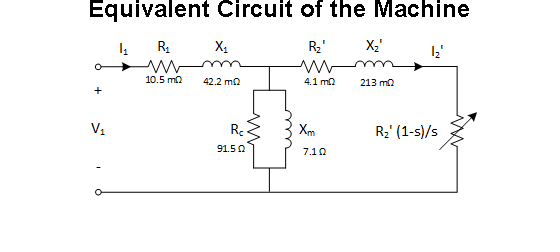
Torque-Speed Characteristics
Obtain the variables that will be used in the torque equation:
wsync = Nsync*2*pi/60; % rad/sec % Thevenin variables Zm = (1j*Xm*Rc)/(1j*Xm+Rc); % ohms Z1 = Rph+1j*Xph; % ohms Vth = Vphase*Zm/(Z1+Zm); % volts Zth = Z1*Zm/(Z1+Zm); % ohms Rth = real(Zth); % ohms Xth = imag(Zth); % ohms % Slip (and rotor speed) array s = -1:0.001:2; s = fliplr(s); Nr = Nsync*(1-s); % rpm wr = Nr*2*pi/60; % rad/sec num = numel(s); % Torque array using the calculated variables and slip variation Tm = (3*abs(Vth)^2/wsync)*(1./ ( (Rth+R2p./s).^2 + (Xth+Xrp)^2 ) )... .*(R2p./s); % Nm % At synchronous speed, torque will be zero (avobe equation cannot calculate) Tm((s==0)) = 0; % Nm % Plot the torque-speed curve figure; plot(Nr,Tm,'k-','LineWidth',2.0); xlabel('Rotor speed (rpm)','Fontweight','Bold'); ylabel('Torque (Nm)','Fontweight','Bold'); title ('Induction Motor Torque-Speed Characteristic','Fontweight','Bold'); grid on;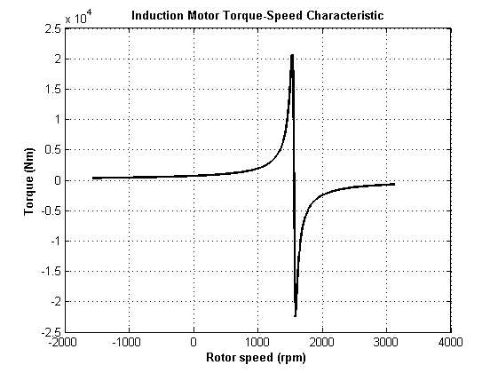
The resultant torque-speed characteristics is very sharp on the linear stable region which I expected for a train traction machine. a closer look on the linear region is shown below.
figure; plot(Nr,Tm,'k-','LineWidth',2.0); xlabel('Rotor speed (rpm)','Fontweight','Bold'); ylabel('Torque (Nm)','Fontweight','Bold'); title ('Induction Motor Torque-Speed Characteristic','Fontweight','Bold'); grid on; xlim([750 2000]);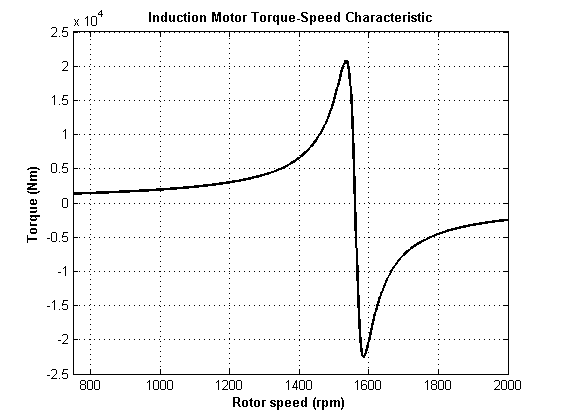
Some other parameters are calculated for the evaluation of machine performance.
rated_slip = (Nsync-Nrated)/Nsync; fprintf('The rated slip is %g.\n',rated_slip); starting_torque = Tm((s==1)); % Nm max_torque = max(Tm); % Nm slip_max_torque = s((Tm==max_torque)); fprintf('The starting torque is %d Nm.\n', starting_torque); fprintf('The maximum torque is %d Nm.\n', max_torque); fprintf('The slip at maximum torque is %d.\n', slip_max_torque);
The rated slip is 0.025641. The starting torque is 6.986622e+02 Nm. The maximum torque is 2.075056e+04 Nm. The slip at maximum torque is 1.600000e-02.
CONCLUSION
NOT USED PARAMETERS
Tas = 200*atan(2*(hw-hos)/(bs1-bos))/pi; % grad % stator slot current Iu = stator_slot_pitch*electric_loading*1000; % amps Tar = 200*atan(2*(hw-hos)/(bs1-bos))/pi; % grad